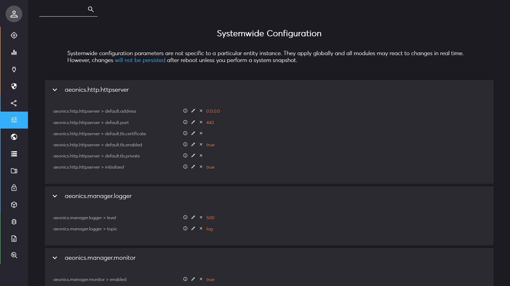
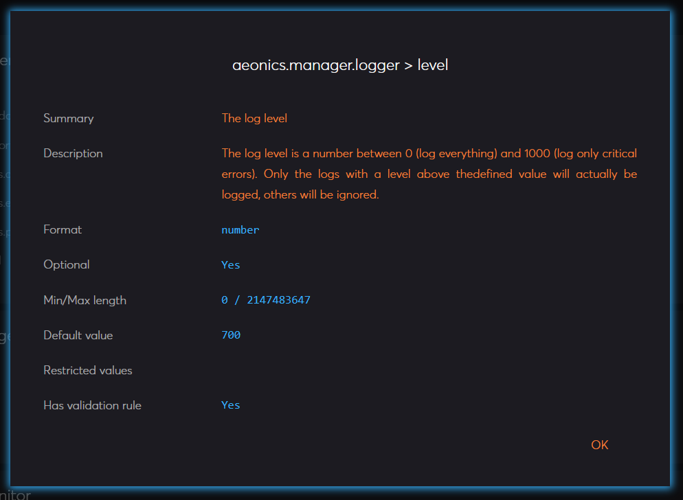
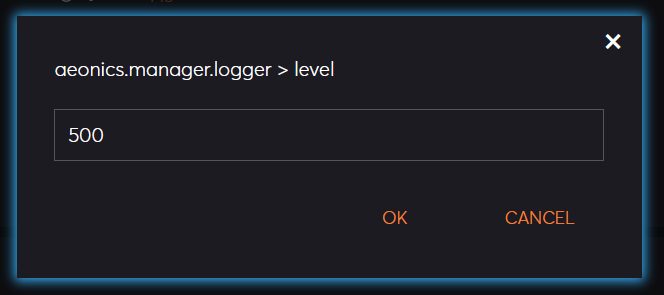
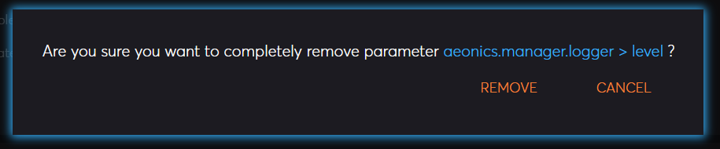

Management Interface Page: Configuration
Description
This page displays all systemwide configuration parameters are not specific to a particular entity instance. They apply globally and all modules may react to changes in real time. The configuration parameters are declared by plugins and the display is regrouped by categories.
The top left search bar allows to quickly find the relevant parameters.

Editing
You can edit individual configuration parameters using the 3 icons on each line. The changes will be reflected immediately, but if you want the new value to persist a system reboot, you must take a snapshot of the system. This particular 2-step save ensures that any mistake is not permanent and can be recovered by simply rebooting the system.
The first icon shows the details of the parameter including its description and expected value type.

The second icon will allow you to change the runtime value of the configuration parameter.

The third icon can be used to remove entirely a configuration parameter, you will be prompter for confirmation first.
